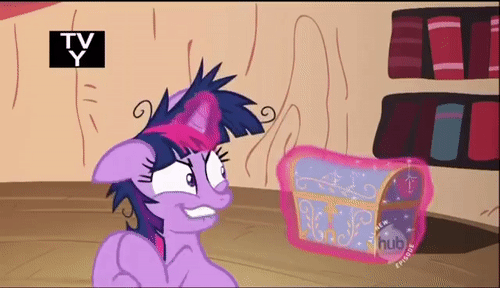
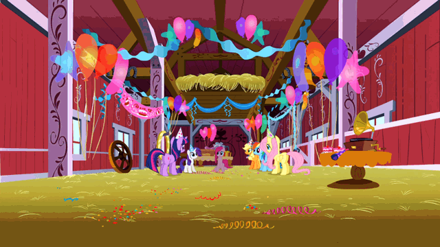

I never finished writing the end because I wasn’t ready to move on at all. I'm still really sad. It’s still fresh, and it will be for a while.
I still hold on to some kind of hope. I convince myself that if we are meant to be, we will find each other. I’m not a fan of waiting though.

He was the person I trusted the most. I told him everything I was too afraid to tell anyone else. He took my secrets and ran away with them. No one cared about what I said as much as he did.
I’m not a priority at all. Just another person, like everyone else. It’s really saddening.
It hurts to remember what is gone, and especially how he acted when he dumped me.
I go to class, do homework, and study like a good student, and then in the middle of my Calculus homework, I think of him. It happens every time. He always comes up when I do my homework. I get stuck on a problem and try to figure it out, and he pops up in my head. “Oh yeah, someone I really cared about is out of my life.”

I'm not over it at all. I've put my time into bettering myself, going to events at school, and meeting new people, doing whatever to get my mind away from him. He still comes up.
Then I said that we skyped on Thursday, three days before we broke up, and I didn't notice anything different. I was happy to see him like always. He had physics homework and I was keeping him from that. He was too busy for me. And I was too. I had work to do too, but I didn’t because he was so enticing to look at.